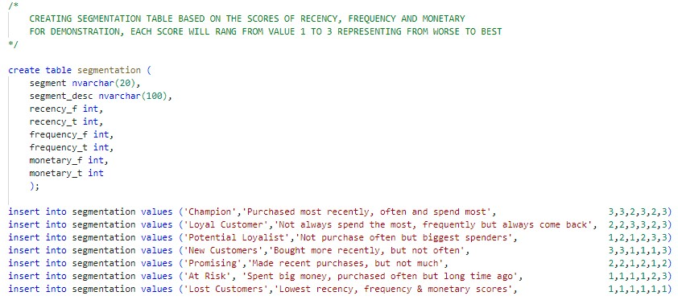
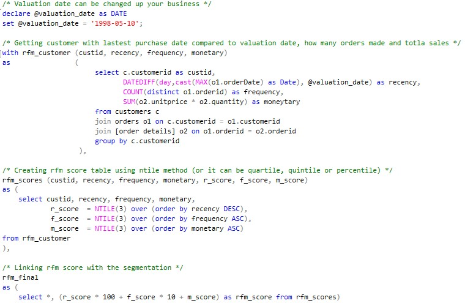
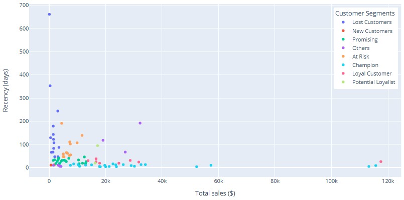
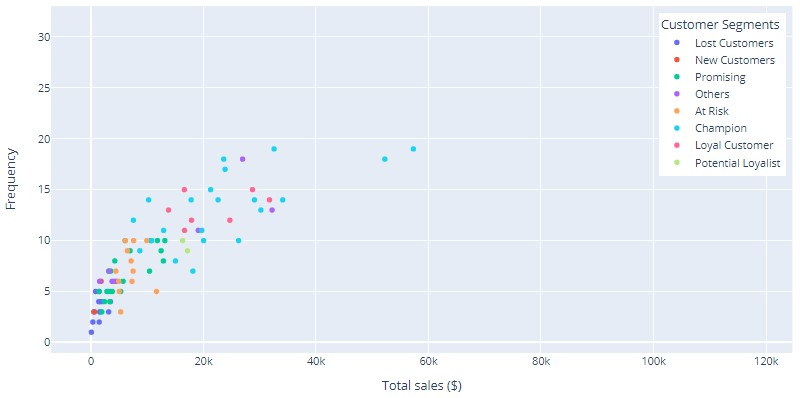
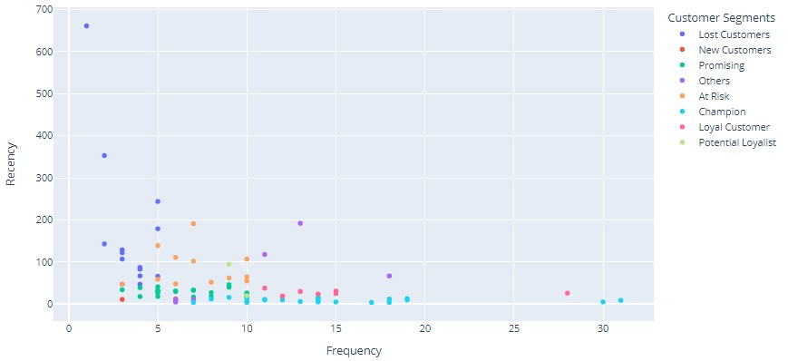
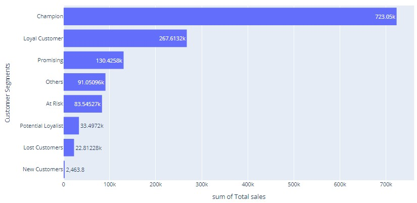
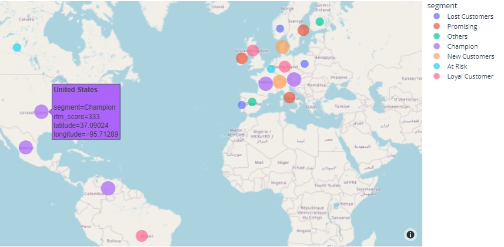

Customer segmentation using RFM based analysis
1. Background
This project demonstrates a simple approach to perform customer analysis on a historical, transactional database using the RFM based segmentation. RFM stands for Recency, Frequency and Monetary, which is one of the common techniques used in CRM to category customers into different groups. This project uses Northwind database, Azure Data Studio and Python are used to create RFM metrics, scores, analysis and visualization.
2. Dataset introduction
The Northwind database contains sales data for a company called Northwind Traders, which imports and exports specialty foods around the world. This sample database was originally come with Microsoft Office suite, but Microsoft also shared the script to create a Northwind data sample in SQL Management tool, which can be accessed via this link. For RFM analysis, this project creates a sample database and use three main tables Customers, Orders and Order Details.
Example of Customers table

Example of Orders table

Example of Order Details table

3. RFM Analysis
3.1 What is RFM
RFM is a marketing technique combining three different factors to rank each individual customer, and assign them into various groups. This helps the company in arranging appropriate treaments for each segment, such as offering incentives for VIP customers, or action plans for those who are at risk of being lost as they haven't purchased a long time ago. The three factors are defined as following:
- Recency: how long (many day ago) a customer has recently purchased? 1 day ago or 14 days ago?
- Frequency: how often (many times) they purchased? It can be how many orders over a defined period
- Monetary: how much the customer spent? It can be total sales from all transaction over a defined period
3.2 Calculating RFM scores
Different businesses can define a scale of scores, for example, a score of 1 to 3 can be assigned to each factor R, F and M, in which 3 is the best/highest value and 1 is the worst/lowest value for ranking. A final RFM score is a combination of R/F/M above.
Example of FRM scores table

For example, given the valuation date 10/05/1998, customer "ALFKI" with last purchase about 31 days ago, total orders and sales are 6 and $4,596, the R/F/M scores are 2/1/2 respectively. The recency (difference between the last purchase and valuation date) of all customers are calculated and sorted in ascending order, then the top 1/3 part of the list will be assigned 3 (highest score), the next 1/3 part and the last 1/3 part will have 2 and 1 (lowest score) respectively. Frequency and Monetary are done using the same logic but in descending order.
It also can be divided into 4 tiers (quartile), or 5 tiers (quintile) or percentile depending on the business complexity. Another method to define the tiers is using fixed ranges. For example, if someone purchased within 15 days, assign score of 3, between 15 and 40 days, assign 2, and score 1 to the rest. Frequency and monetary can also be applied using this approach.
3.3 Segmentation of RFM scores
Given 3 tiers, total segments is 27 (or 3x3x3). Likewise, the case of 4 tiers results in 64 distinct segments (4x4x4). However, it is unnecessary to have so many segments, so marketers should assemble segments that most relevant to the business.
- Champion: who purchase most recently, often and spend most, FRM score 333, 332...
- Loyal customer: who not always spent the most, not quite often but always come back, FRM score 232...
- Potential loyalist: who not purchase quite often but biggest spenders, FRM score 113, 123...
- New customer: who has made initial purchases, either spend most or not, FRM score 313, 312, 311...
- ...
- Lost customer: who hasn't purchased in some time, FRM score 111, 112, 113...
4. Implementation
Azure Data Studio is used to create database Northwind, FRM metric and scores. Python package pyodbc is used to retrieve data from SQL Server, plotly is used for explanatory analysis and data visualization. Python code can be found in github below.
Example of creating the segment table
{kind=link}
Example of calculating customer statistics and rfm scores
{kind=link}
5. Analysis of the results
Recency vs. Monetary value
Customers who recently purchased within 3 months or up to 100 days contributed the majority of total sales. However, most of their individual spendings are capped at $40,000 and they are not new customers as well. There are five customers on the bottom right who purchased most recently and total spending is roughly 33% of total sales.
{kind=link}
Frequency vs. Monetary
The scatter plot indicates that as the frequency of visits increases, the total sales generated also increases. Customers in the segments of "Champion", "Loyalist", "Promising" drive higher sales compared to other segments.
{kind=link}
Recency vs. Frequency
Customers with low frequency are mostly in the segments of "Lost Customers" and "At Risk", they are roughly 31% of total customers. This scatter plot indicates that customers who visited recently are more likely to return compared to those who has visited long time ago, and therefore higher frequency is mainly associated with recent visits.
{kind=link}
Total sales by segments
The bar chart indicates that the top 3 segments of "Champion", "Loyal Customer", and "Promising" contributed roughly 83% of total sales ($1.12m vs $1.35m). "At Risk" customers still generated high sales while the "Potential loyalist" and "New Customers" did not contribute as expected.
{kind=link}
Geographic location of the customer segments scaled by total sales
{kind=link}
Other visualizations such as treemap of customer segments can also give some useful insights. These charts can be found in the github Python code below.
6. Conclusion
RFM analysis is useful to understand customer behaviors, this method is quick, simple and can be applied for different type of businesses such as online, retail etc. However, this technique is a historical analysis and not for prospects. Subjectively defining group of segments can be sensitive to the business and may lose potential customers. Machine learning method such as K-Means, DBSCAN together with feature scaling of R/F/M can be incorporated with RFM analysis to build an effective model. This enhancement will be implemented in another post.